動作確認の記録
設計書「動作確認の記録」節に記載した7項目の順に、実際に取得したスクリーンショットと 説明を並べる。すべて Docker（WordPress 6.6.2 / PHP 8.2.25 / Welcart 2.12.1.2608181） 上で実際に操作して取得したものであり、未実施の項目はない。
検証手順（テスト商品・割引ルールの内容）は README.md の
「動作確認環境」節と合わせて参照すること。
- テスト商品A:
検証用商品40000円（TEST-40000／SKU-001／単価 ¥40,000） - テスト商品B:
検証用商品3000円（TEST-3000／SKU-002／単価 ¥3,000、 しきい値をまたぐ数量調整のために追加登録） - 割引ルール: 10,000円以上で500円引き／30,000円以上で2,000円引き
1. 管理画面での複数段ルール設定#
Welcart Shop > 自動割引設定 で「10,000円以上で500円引き」「30,000円以上で
2,000円引き」の2段を入力し、保存した直後の状態。
- 入力直後:
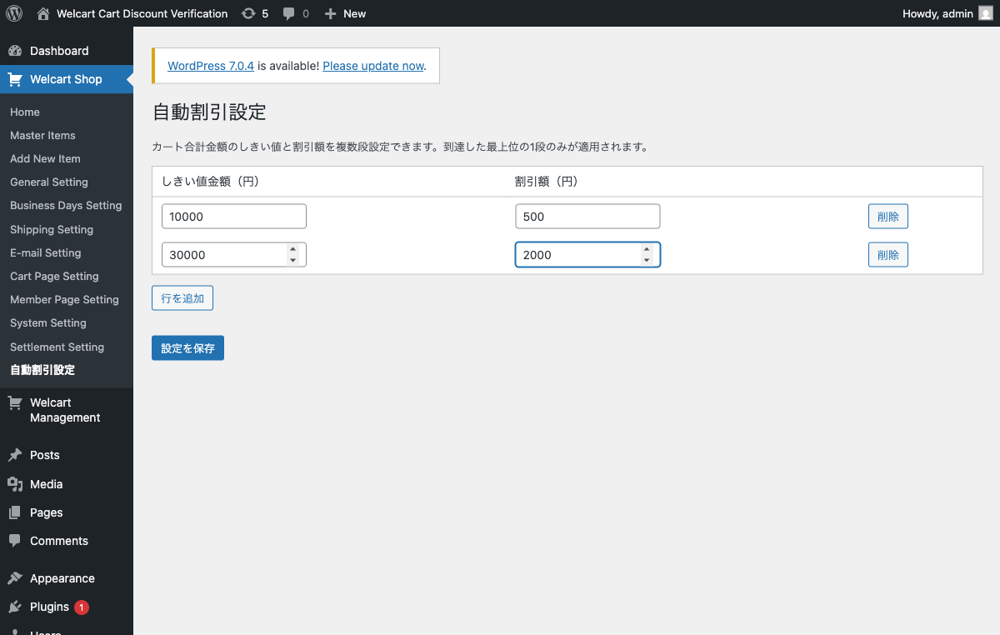
docs/screenshots/01-settings.png - 保存後（
wcd_saved=1のクエリで成功通知が表示された状態）: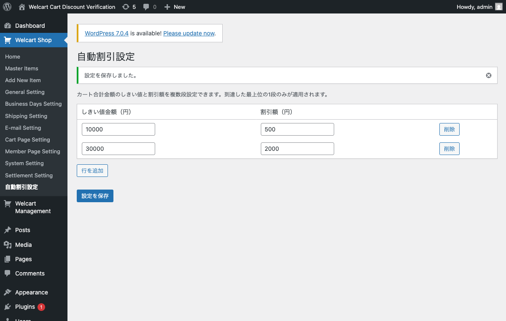
docs/screenshots/01-settings-saved.png
{kind=link}
{kind=link}
保存内容は DB（wp_options.wcd_settings）でも
a:2:{i:0;a:2:{s:9:"threshold";i:10000;s:6:"amount";i:500;}i:1;a:2:{s:9:"threshold";i:30000;s:6:"amount";i:2000;}}
として正しくシリアライズされていることを確認済み。
2. しきい値未満のカート画面（割引なし）#
テスト商品B（単価¥3,000）を数量3（合計¥9,000）でカートに入れた状態。 しきい値（¥10,000）未満のため割引行が表示されない。
{kind=link}
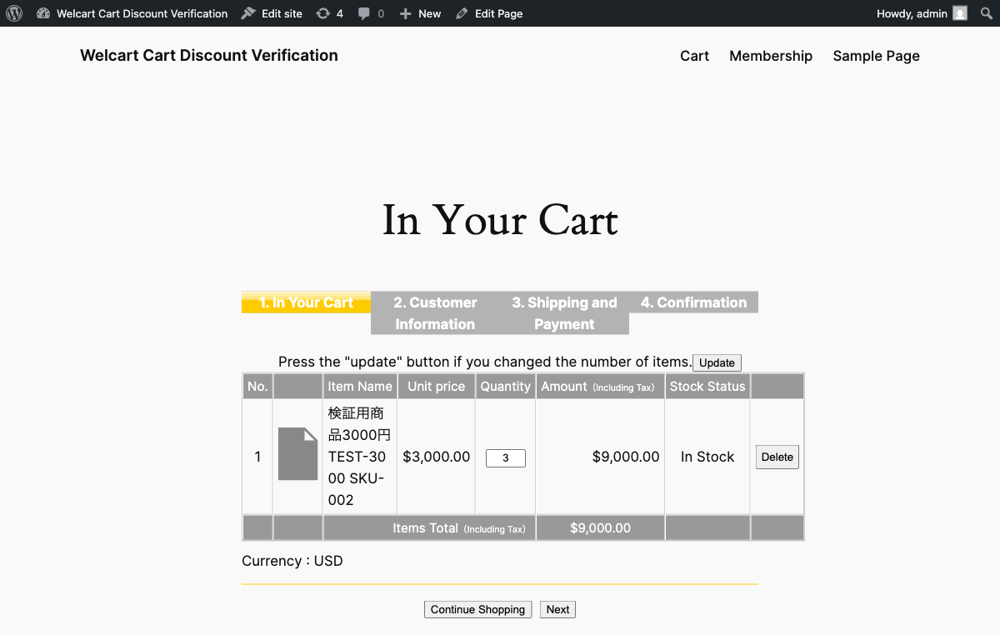
3. しきい値到達後のカート画面（割引行の表示）#
同商品の数量を4（合計¥12,000）に更新すると、「自動割引 -¥500」 「割引後合計 ¥11,500」の行がカート表に追加される。
{kind=link}
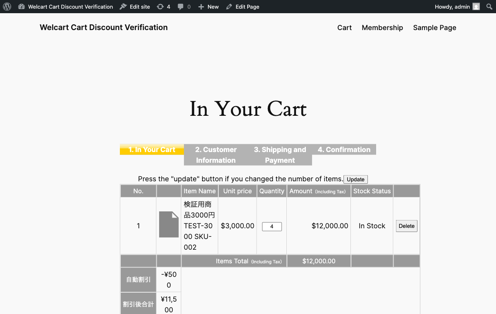
4. 購入確認画面の割引行と支払総額#
数量を10（合計¥30,000）に更新後、購入手続きを進めた確認画面。 「Campaign discount $-2,000.00」「Total Amount $28,000.00」と表示され、 カート画面の割引後合計（後述の項目6と同じ状態）と一致することを確認した。
{kind=link}
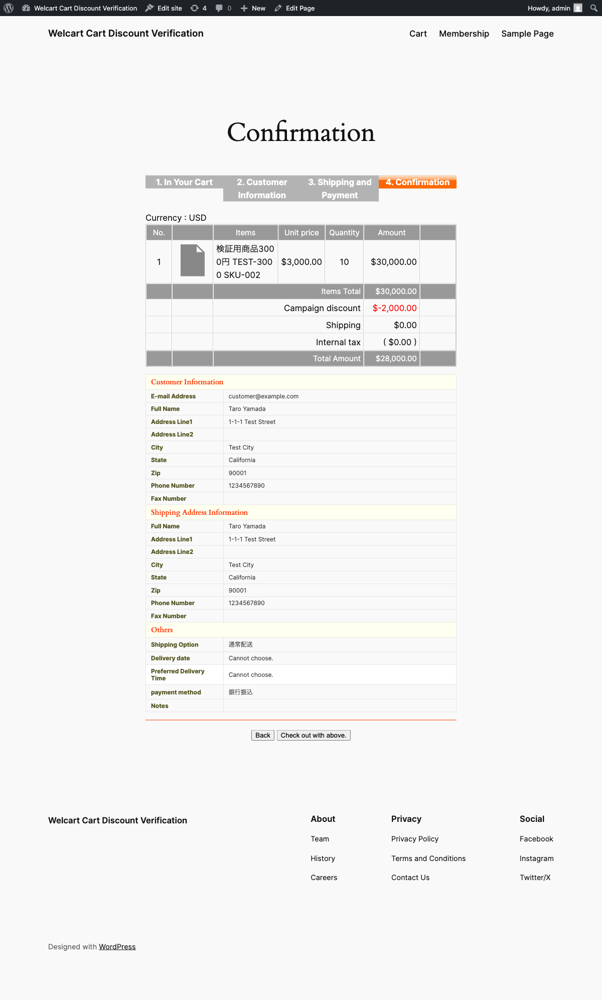
5. 受注データ一覧・受注詳細の割引額#
上記の内容で注文を確定した後の受注一覧・受注詳細画面。
- 受注一覧（Total Amount $28,000.00 と表示）:
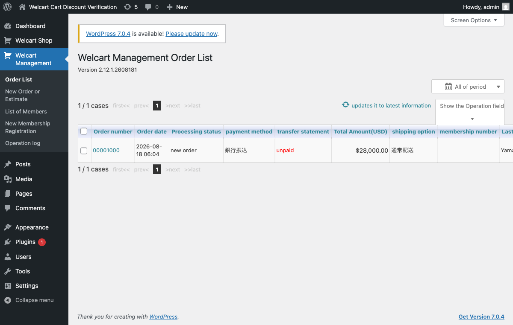
docs/screenshots/06-order-list.png - 受注詳細（Campaign discount -2,000.00、Total Amount 28,000 と表示）:
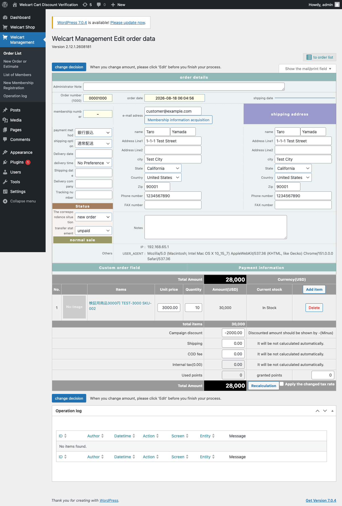
docs/screenshots/07-order-detail.png
{kind=link}
{kind=link}
DB（wp_usces_order）でも order_item_total_price = 30000.00 /
order_discount = -2000.00 として保存されていることを直接クエリして確認した。
これにより、カート画面・確認画面・受注データの3箇所で割引額（¥2,000）が
完全に一致することをDocker環境で実際に確認できた。
6. 上位段に到達したときの割引額の切り替わり#
カート画面で数量を4（¥12,000、¥500引き）→10（¥30,000）に更新した際、 割引額が ¥500 と ¥2,000 の合算（¥2,500）にならず、上位段の ¥2,000 のみに 切り替わることを確認した。
{kind=link}
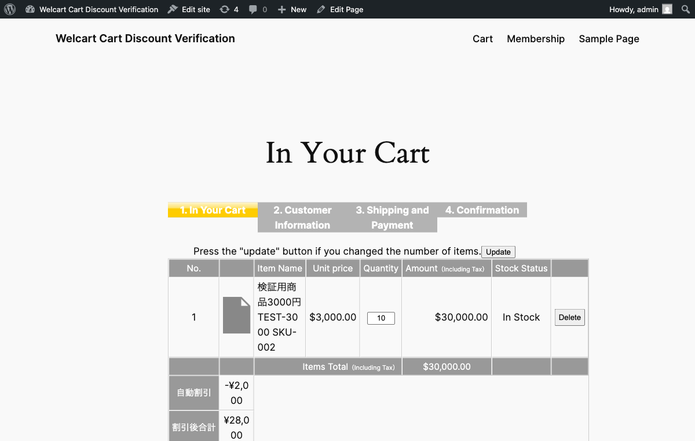
補足: 受注編集時の再計算確認（実装計画タスク15ステップ8）#
上記で確定した受注（数量10・¥30,000・割引¥2,000）を管理画面の受注編集画面で 数量4（¥12,000）に変更し「Recalculation」ボタンを押した際の再計算結果。
{kind=link}
この検証で「Campaign discount」が -¥2,500（¥12,000の正しい段は本来 -¥500）と
なる不具合を発見した。原因は usces_filter_order_discount_recalculation の
$discount 引数の扱いにあり、includes/class-wcd-integration.php を修正して
再検証し、正しく -¥500・合計¥11,500 と表示されること、「Recalculation」を
複数回押しても値が変わらない（べき等）こと、「change decision」で保存後に
DB（order_item_total_price=12000.00 / order_discount=-500.00）へ正しく
反映されることを確認した。発見の経緯と修正内容は docs/ai-report.md と
docs/design-notes.md に記録している。
7. composer lint と composer test の実行結果#
上記の不具合修正を終えたこの時点での再実行結果。以降の周回で回帰テストを追加した ため、テスト件数はここから増えている。最新の値は「20. 提出直前の最終確認」を参照。
- lint: （違反0件）
docs/screenshots/10-composer-lint.txt
....... 7 / 7 (100%) Time: 301ms; Memory: 14MB
- test: （15 tests, 17 assertions, OK）
docs/screenshots/11-composer-test.txt
PHPUnit 9.6.36 by Sebastian Bergmann and contributors. ............... 15 / 15 (100%) Time: 00:00.009, Memory: 4.00 MB OK (15 tests, 17 assertions)
8. 受注再計算の精緻化（2周目修正）の再検証#
evaluator の REJECT を受けた2周目修正（fix: カート表フッター挿入時に $usces->cart の null安全性を確保 / feat: 受注再計算で自プラグイン注入額のみを精緻に差し戻すよう改善）
について、既存の Docker 環境（コンテナは起動済みだったためそのまま使用）と Playwright で
実際に操作して再検証を行った。テスト方法は、上記1〜7で確定した受注（ID 1000）を SQL で意図的に
既知の状態に戻しながら再計算を行うというものである。フルの購入フロー（カート30,000円→
受注確定）から毎回やり直さなかった理由は docs/ai-report.md「AIの出力が誤っていた箇所」5
に記録した通り、既存受注を使う方が検証したいシナリオ（本修正より前に作成された受注の
挙動）をより正確に再現できるためである。
8-1. メタ未記録の既存受注に対する1回目の再計算（既知の限界の再現）#
修正前のコードで作成された受注（ID 1000、wcd_injected_discount メタ未記録、
数量4・¥12,000・正しい割引額-¥500）に対し、数量を変更せず「Recalculation」を
押したところ、表示が -¥1,000 になった（期待値は-¥500のまま変わらないはず）。
docs/design-notes.md「受注再計算の既知の限界」に記録した通りの二重計上と同種の
誤りが、修正後のコードでも「メタ未記録」という条件下で再現することを確認した。
{kind=link}
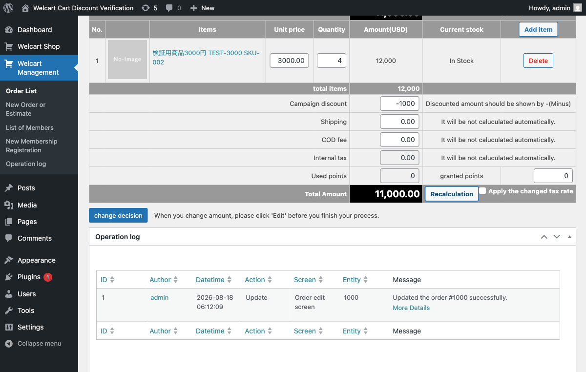
DB を直接確認し、この時点で wp_usces_order_meta に wcd_injected_discount = 500
（＝現在のカート状態に対する正しい割引額）が新たに記録されたことも確認した
（remember_injected_discount() は常に正しい $amount を記録するため、
記録される値自体は正しい。誤っているのは表示された $discount の値である）。
8-2. メタが正しく記録された状態からの再計算（正常系の確認）#
DB（wp_usces_order.order_discount / wp_usces_order_meta.wcd_injected_discount /
wp_usces_ordercart.quantity）を SQL で意図的に「数量4・¥12,000・discount=-500・
メタ=500」という整合の取れた状態に戻し、ブラウザをリロードして再検証した。
- 数量を10（¥30,000）に変更し「Recalculation」を押すと、正しく -¥2,000 と 表示された。
- 続けてもう一度「Recalculation」を押しても -¥2,000 のまま変化しなかった （べき等性を確認）。
- 数量を4（¥12,000）に戻して再計算すると、正しく -¥500 に戻った。
{kind=link}
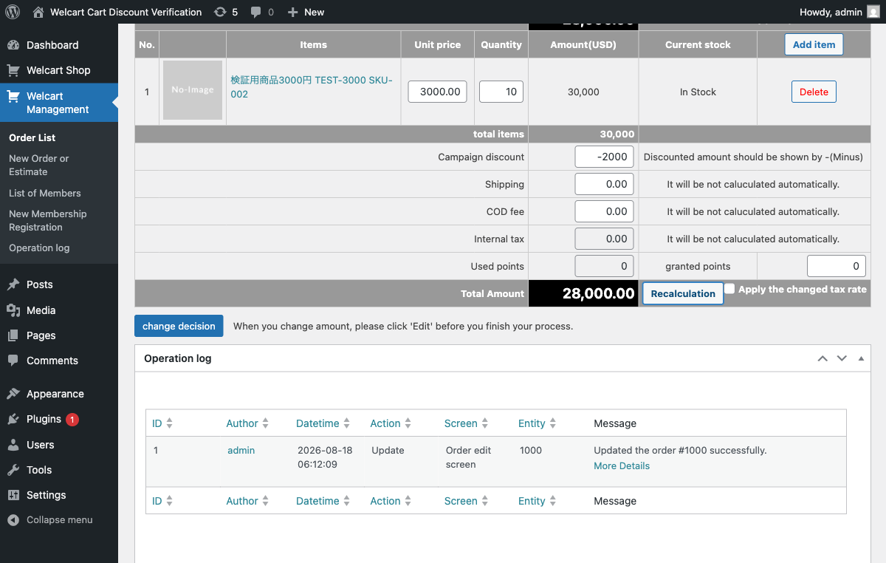
この結果、メタが正しく追跡されている限り、精緻化後のロジックは意図通りに動作する ことをDocker環境で実際に確認した。8-1 で確認した限界は、あくまで「メタが一度も記録されていない 受注」に固有のものである。
8-3. カート画面（フロント）のリグレッション確認（null 安全性修正）#
filter_cart_table_footer() に追加された $usces->cart の null ガードが通常の
カート表示を壊していないことを確認するため、テスト商品（TEST-3000）を数量4で
カートに追加し、カート画面を表示した。「自動割引 -¥500」の行が正しく表示され、
リグレッションがないことを確認した。
{kind=link}
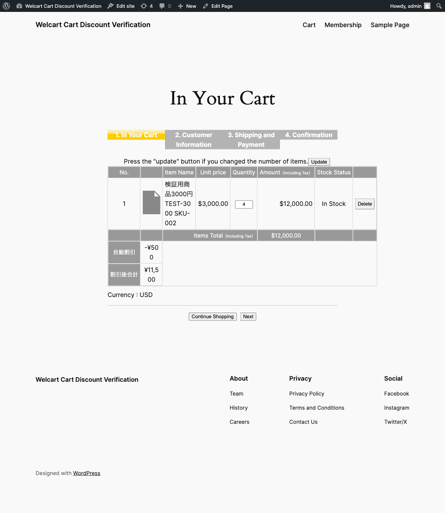
なお、$usces->cart が実際に null になる状況（このガードが本来守ろうとしている
経路）そのものは、通常のブラウザ操作では再現できなかった。これはコードレビューで
対処した防御的分岐であり、この経路自体をDocker環境上の実際の操作で発火させることはできていない
（docs/ai-report.md「うまくいかなかったこと」に同旨を記録）。
8-4. composer lint / composer test の再実行#
ローカル環境に PHP が見つからなかったため、Docker コンテナ内（PHP 8.2.25、
docker exec docker-wordpress-1 ...）で bind mount 済みの vendor/bin/phpunit /
vendor/bin/phpcs を直接実行し、2周目修正後のコードで次を確認した。
vendor/bin/phpunit --bootstrap tests/bootstrap.php tests/unit: 15 tests, 17 assertions, OKvendor/bin/phpcs --standard=phpcs.xml.dist: 7 / 7 完了、違反0件
9. 新規受注（フロント購入フロー）での受注メタ自動記録のDocker環境での確認（3周目修正）#
evaluator の REJECT（order-meta-hook-coverage 軸）を受け、上記「8」節までの再検証が
既存受注（ID 1000）を SQL で意図的に状態操作したものに留まり、
usces_action_reg_orderdata フック自体が実際のフロント購入フローを通じて発火することを
確認していなかった点を補った。
手順: 既存の Docker 環境・Playwright で管理画面にログインし（パスワードは
wp_set_password() で再設定）、Welcart Shop > 自動割引設定 の割引ルール
（10,000円以上-500円／30,000円以上-2,000円）が保持されていることを確認した上で、
フロント（http://localhost:8080）でテスト商品（TEST-40000／¥40,000、
セッションカートに残っていた TEST-3000×4／¥12,000 と合わせて合計¥52,000）を
カートに入れ、非会員として購入手続きを最後まで進めて新しい受注を確定した。
- しきい値未満のカート画面（割引行）:
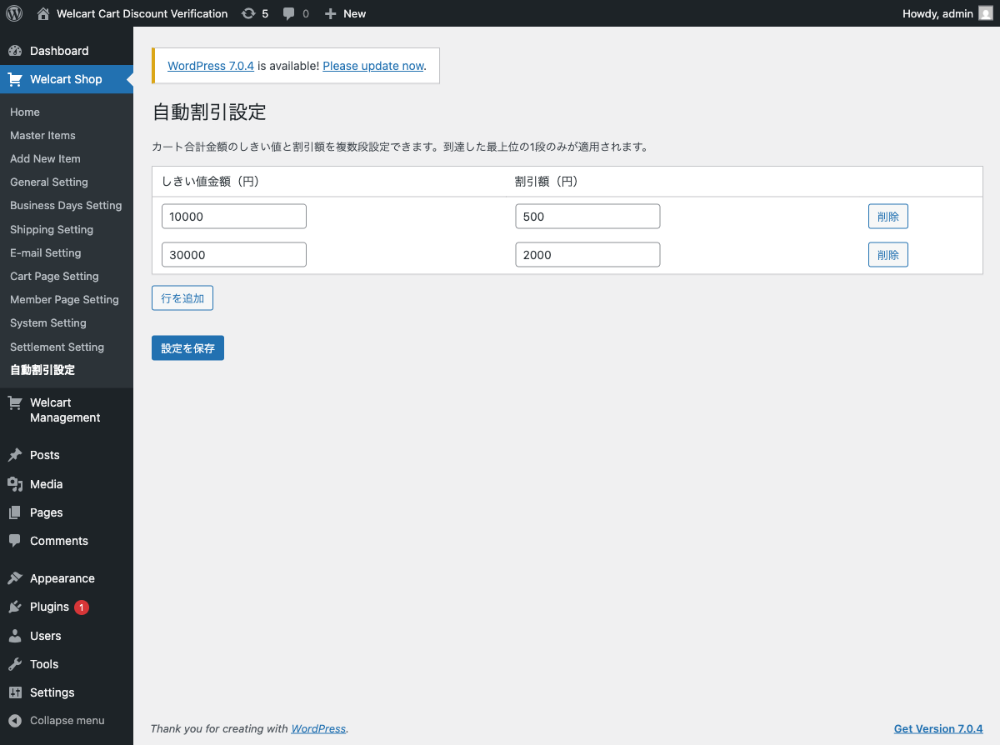
docs/screenshots/15-settings-confirmed-before-new-order-flow.png - カート画面（自動割引 -¥2,000、合計¥52,000）:
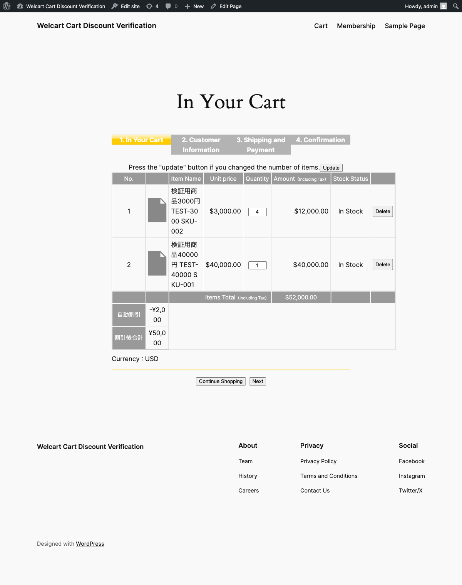
docs/screenshots/16-new-order-flow-cart.png - 購入確認画面（Campaign discount $-2,000.00、Total Amount $50,000.00）:
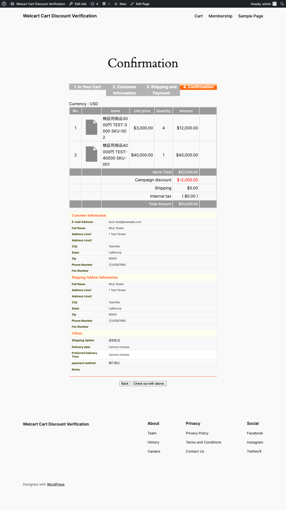
docs/screenshots/17-new-order-flow-confirmation.png
{kind=link}
{kind=link}
{kind=link}
購入を確定すると新しい受注 ID 1001 が発行された。DB を直接クエリして確認したところ、
wp_usces_order（ID=1001）:order_item_total_price = 52000.00,order_discount = -2000.00wp_usces_order_meta（order_id=1001）:wcd_injected_discount = 2000
であり、フロントの購入フローを通じて usces_action_reg_orderdata が実際に発火し、
WCD_Integration::record_injected_discount_on_order_registration() が
$args['order_id'] と $args['cart'] を正しく受け取って、本プラグインが注入した
割引額（¥2,000）を wp_usces_order_meta.wcd_injected_discount へ自動的に正しく
記録することをDocker環境で実際に確認した。管理画面の受注詳細画面でも Campaign discount が
-2000.00 と表示されることを確認した。
{kind=link}
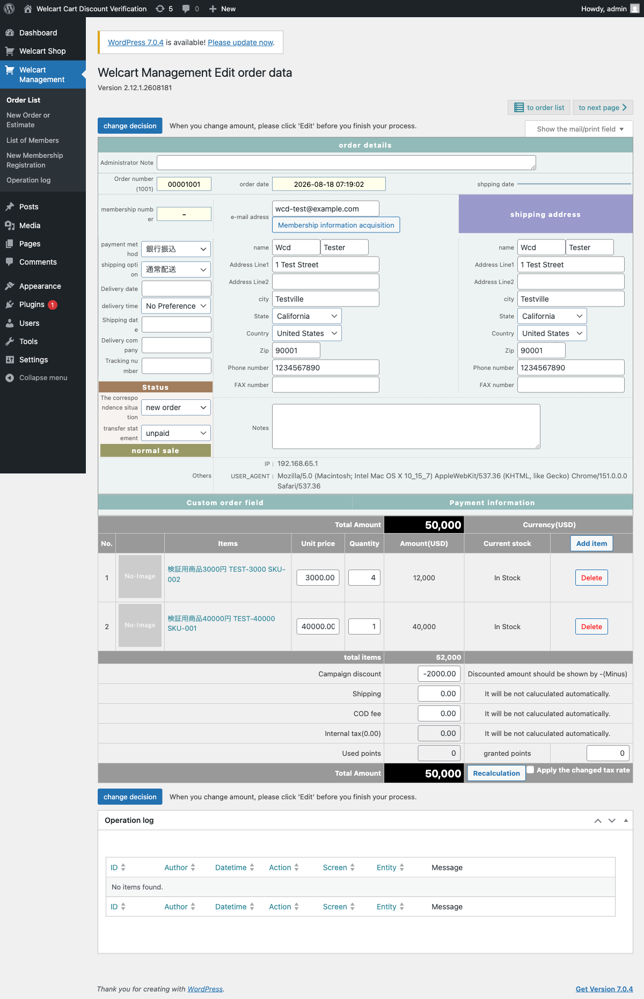
続けて、この新規受注（ID 1001）を管理画面の受注編集画面で開き、TEST-40000 の数量を
0 に変更して「Recalculation」を押したところ、正しい段（合計¥12,000 → -¥500）に
切り替わった。もう一度「Recalculation」を押しても -¥500 のまま変化しない（べき等）
ことを確認し、wp_usces_order_meta.wcd_injected_discount も 500 に更新されている
ことを確認した（このタイミングでは受注本体の DB 値はまだ更新前の
order_item_total_price = 52000.00 / order_discount = -2000.00 のままであり、
「Recalculation」は画面上のプレビュー計算のみで、受注本体の保存は行っていないことも
併せて確認した）。
{kind=link}
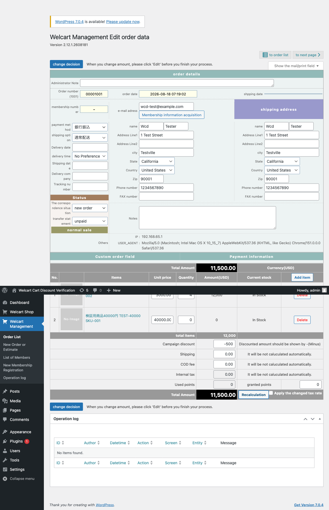
さらに「change decision」で保存し、DB（wp_usces_order.order_item_total_price = 12000.00,
order_discount = -500.00）へ正しく反映されることを確認した。
{kind=link}
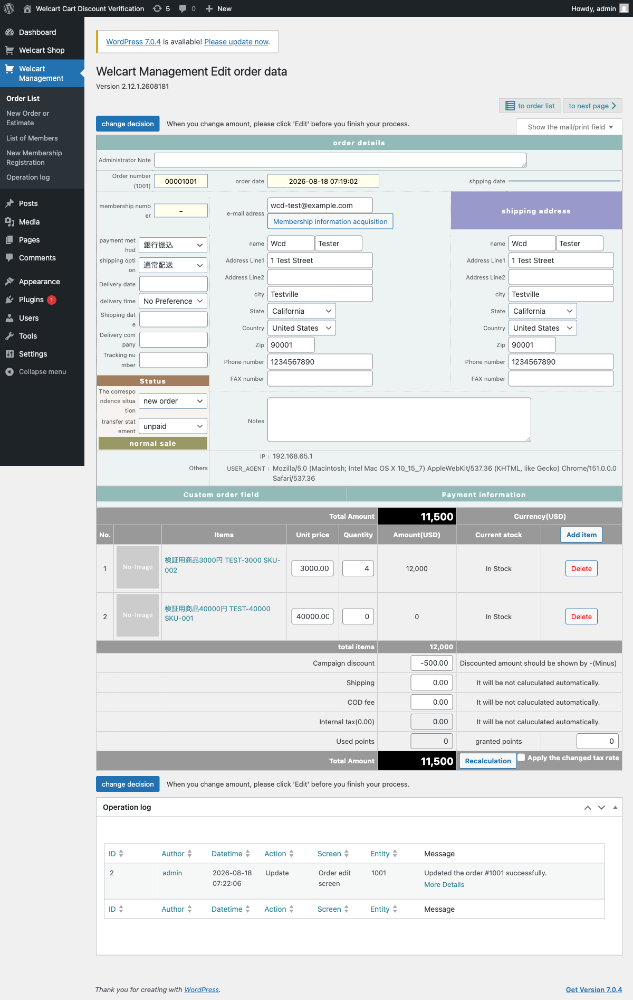
10. 受注再計算の既知の限界の追加検証（3周目修正・-¥2,500 のDocker環境での確認と UI 経由の手動修正）#
evaluator の REJECT（known-limitation-precision 軸）を受け、docs/design-notes.md
「受注再計算の既知の限界」節が「Docker環境で確認した」と記載していた -¥2,500 という数値と、
「Campaign discount 欄を UI で手動編集して保存する」という回避策について、実際には
上記8節では検証されていなかった点（8-1 と 8-2 が連続した操作ではなく、8-2 は SQL で
改めてクリーンな状態に戻してから行われていたこと、回避策自体は SQL による DB 直接
書き換えでしか検証されていなかったこと）を補った。
手順1（8-1 の再現）: 既存の受注（ID 1000）を SQL で「メタ未記録・数量4・
order_item_total_price=12000.00・order_discount=-500.00」という状態に戻した。
受注編集画面で数量を変更せずに「Recalculation」を押したところ、8-1 節と同じく
表示が -¥500 から -¥1,000 に変化した。
{kind=link}
手順2（8-1 からの連続シナリオ・未検証だった続きの操作）: 上記の -¥1,000 の状態から
SQL でリセットせずそのまま、同じ受注編集画面で数量を10（¥30,000）に変更し、
もう一度「Recalculation」を押した。実際に表示された値は -¥2,500 であり、
docs/design-notes.md の数式（telescoping 展開: discount_n = -(amount_before_fix) - amount_n、amount_before_fix = 500 が毎回加算され続けるため
-500 - 2000 = -2500）による推定値と正確に一致することをDocker環境で実際に確認した。
{kind=link}
手順3（回避策のDocker環境での確認・UI 経由の手動修正）: 上記の誤った状態（表示 -¥2,500）から、
実際に管理画面の「Campaign discount」欄（#order_discount）へ直接 -2000 を入力し
（SQL ではなく UI 操作）、「change decision」ボタンで保存した。
{kind=link}
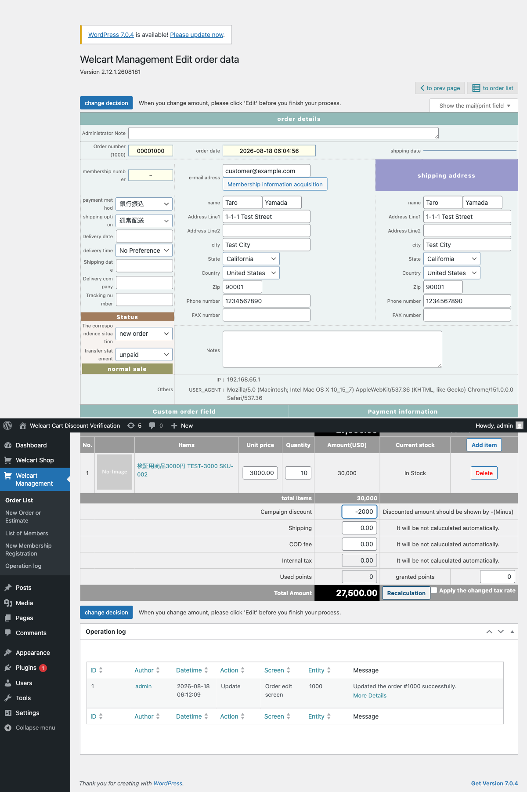
保存後、DB を直接クエリして wp_usces_order（ID=1000）が
order_item_total_price = 30000.00 / order_discount = -2000.00 として正しく
反映されていることを確認した。これにより「Campaign discount 欄を UI で手動編集して
保存する」という回避策が、SQL によるシミュレーションではなく、Docker環境で実際の
管理画面操作を通じて機能することを確認できた。
さらに、この保存後にページを再読み込みしてもう一度「Recalculation」を押したところ、 表示は -¥2,000 のまま変化しなかった（メタと discount フィールドの整合が回復し、 以降の再計算が健全な状態に戻ったことを確認）。
{kind=link}
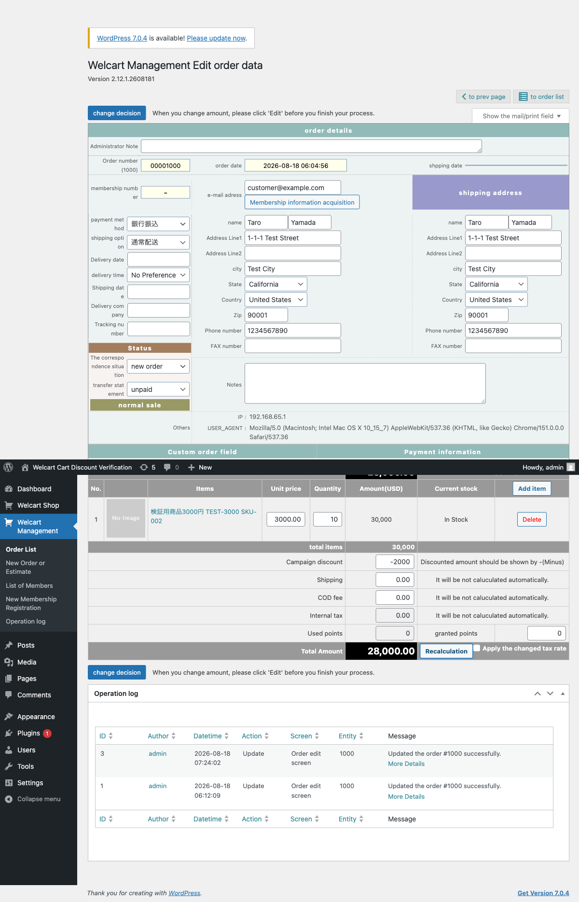
10-1. composer lint / composer test の再実行（3周目修正後）#
ローカル環境の PHP（/opt/homebrew/opt/php@8.2/bin/php）で /tmp/composer.phar test
/ /tmp/composer.phar lint を実行し、次を確認した（本タスクはドキュメント・検証が
中心でコード変更を行っていないため、テスト内容自体は test-quality 軸の修正
（空文字・非数値の除去テスト追加）を反映した最新のテストスイートである）。
phpunit --bootstrap tests/bootstrap.php tests/unit: 16 tests, 18 assertions, OKphpcs --standard=phpcs.xml.dist: 7 / 7 完了、違反0件
第二段階: 除外条件設定（会員ランク・商品カテゴリ）のDocker環境での検証
設計書 .nipper/chot/specs/2026-08-20-welcart-cart-discount-exclusions-design.md
「テスト方針／Docker環境での検証」の6項目を、実装計画タスク13の手順に沿って実際に操作して確認した。
環境は第一段階と同一（Docker: WordPress 6.6.2 / PHP 8.2.25 / Welcart 2.12.1.2608181）。
検証用商品は既存の25点（docker/seed-items.php）とテスト商品2点（TEST-40000 / TEST-3000）
をそのまま使用し、新規投入は行っていない。
検証環境の最新化にあたって発見・修正した問題（プラグインのバグではない）#
docker compose up -d --build → ./docker/setup.sh を実行したところ、テーマ有効化の手順
（wp theme activate welcart-shop-theme）が「スタイルシートが見つかりません。」で失敗した。
調査したところ、名前付きボリューム docker_wp_data 内の
wp-content/themes/welcart-shop-theme ディレクトリが空（ディレクトリ自体は存在するが
中身のファイルが無い）になっていた。原因は、過去に docker/compose.dev.yml
（テーマ編集用の bind mount 追加設定）を使った検証セッションが残っており、
そのときの docker-wpcli-1 コンテナ（39時間起動したまま）だけがホスト側の
docker/theme/welcart-shop-theme を bind mount していて、本来の名前付きボリューム側には
中身が反映されていなかったと推測される。これはプラグイン本体のコードとは無関係な、
検証環境（Docker ボリューム）側の状態異常であり、docker/Dockerfile や
docker/setup.sh 自体の不具合ではない。
一時的な alpine コンテナで名前付きボリュームにホスト側のテーマファイルを
コピーして復旧し（docker run --rm -v docker_wp_data:/target -v $(pwd)/docker/theme/welcart-shop-theme:/source:ro alpine sh -c "cp -a /source/. /target/wp-content/themes/welcart-shop-theme/"）、
その後 ./docker/setup.sh を再実行して正常終了することを確認した。既存の商品25点・
割引ルール2段（10,000円以上-500円／30,000円以上-2,000円）はいずれも維持されていた。
検証用データ#
- 商品カテゴリ:
docker/seed-items.phpが投入する25商品は5カテゴリ （ギター/ベース/アンプ/エフェクター/ドラム、各5点）に分類済み - 会員ランク（
usces_customer_status）: 通常会員(0) / 優良会員(1) / VIP会員(2) / 不良会員(99) - 除外条件設定画面から追加された擬似ランク: 未ログイン（非会員）
11. 除外カテゴリの動作確認（部分除外・3箇所整合）#
Welcart Shop > 自動割引設定 の除外条件セクションで、商品カテゴリ「エフェクター」に
チェックを入れて保存した。
{kind=link}
保存後、DB（wp_options.wcd_exclusions）が
a:2:{s:5:"ranks";a:0:{}s:10:"categories";a:1:{i:0;i:9;}}
（9 はエフェクターの term_id）となっていることを直接クエリして確認した。
非除外カテゴリの商品2点（Practice Pad Set ¥7,500・ドラム／Solid State Practice 10W ¥9,800・アンプ、合計¥17,300）と、除外カテゴリの商品（Multi Effects Processor ¥32,000・エフェクター）をゲスト（非会員）としてカートに入れたところ、 カート表は「商品合計 ¥49,300」「自動割引 -¥500」「割引後合計 ¥48,800」と表示された。 除外カテゴリ商品分（¥32,000）を含めた生の商品合計は¥49,300（本来なら30,000円以上の 段に該当し-¥2,000のはず）だが、しきい値判定に使われる小計は非除外分の¥17,300のみで あるため、10,000円以上30,000円未満の段（-¥500）が適用されていることを確認した。
{kind=link}
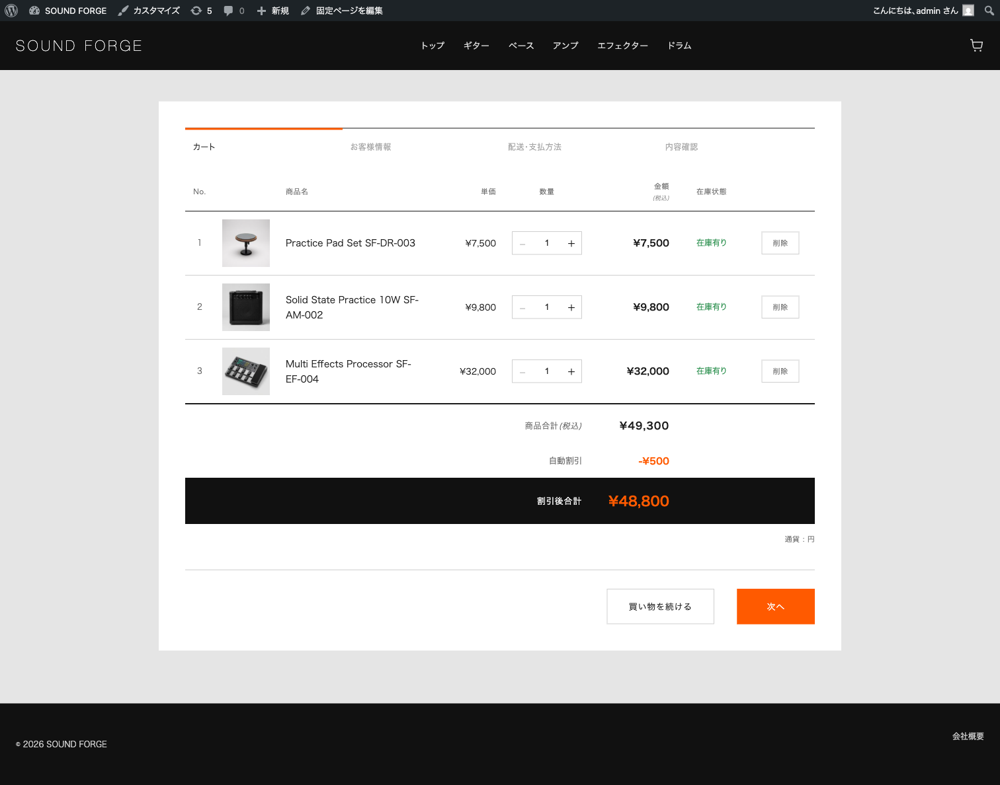
続けて2点目の除外カテゴリ商品（Digital Delay DL-2 ¥15,200・エフェクター）を追加すると、 商品合計は¥64,500に増えたが、自動割引は-¥500のまま変化しなかった。これにより、 除外カテゴリ商品をいくら追加しても判定小計（¥17,300固定）に影響しないこと（部分除外の 性質）を確認した。
{kind=link}
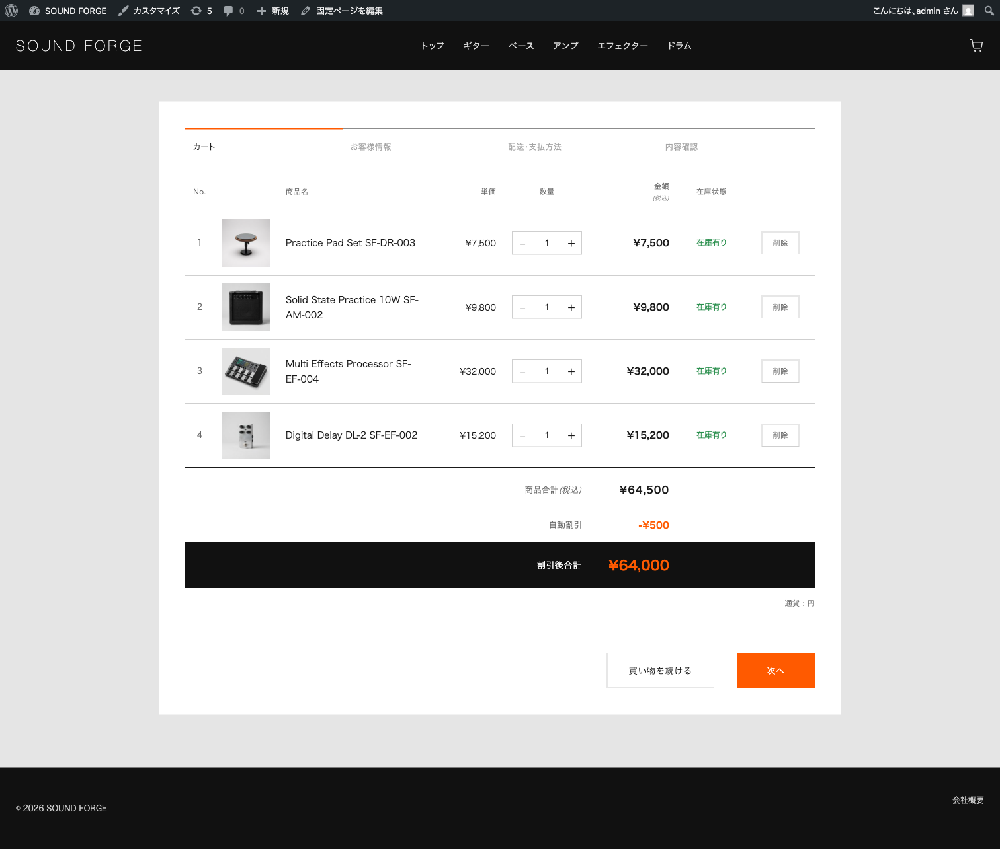
購入手続きを進めた購入確認画面でも「商品合計 ¥64,500」「キャンペーン割引 ¥-500」 「総合計金額 ¥64,000」とカート画面と完全に一致することを確認した。
{kind=link}
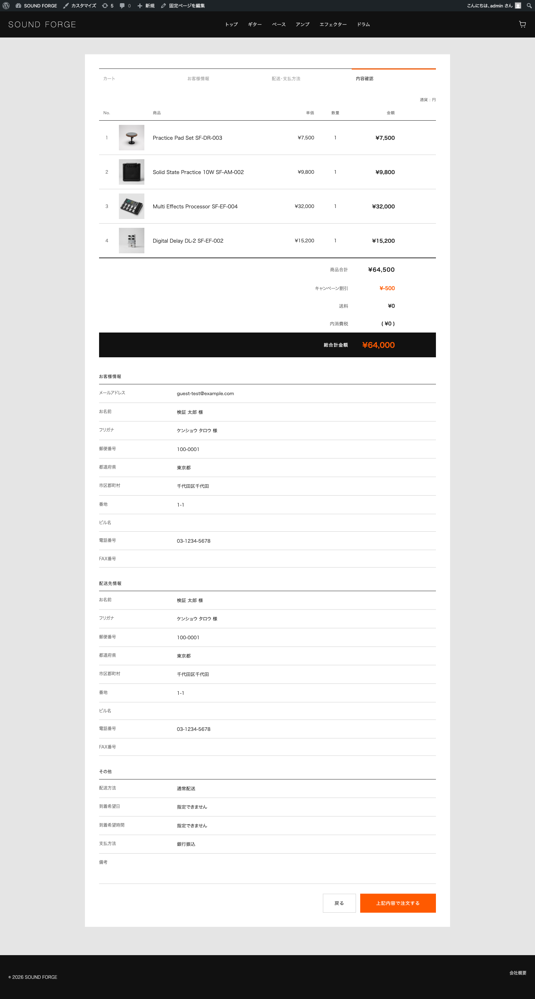
ゲストとして注文を確定し、受注ID 1008 が発行された。管理画面の受注データ編集画面でも
「商品合計 64,500」「キャンペーン割引 -500」「総合計金額 64,000」と表示され、
DBを直接クエリしても wp_usces_order（ID=1008）が
order_item_total_price = 64500.00 / order_discount = -500.00 として保存されている
ことを確認した。これにより、除外カテゴリ設定時もカート画面・購入確認画面・受注データの
3箇所で割引額（¥500）が完全に一致することをDocker環境で確認した。
{kind=link}
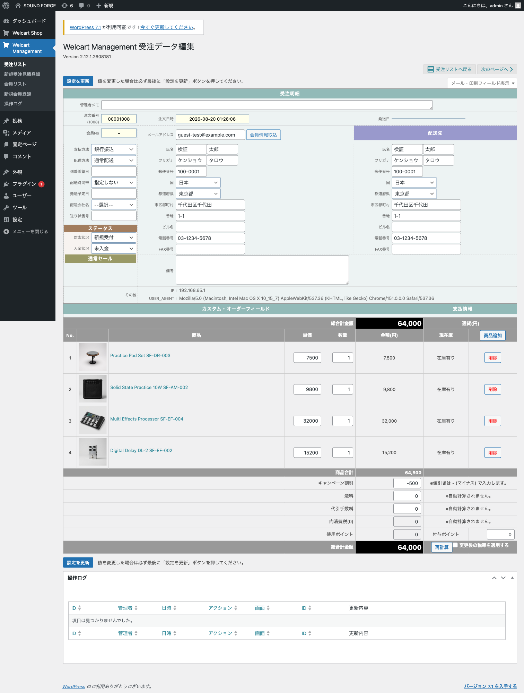
12. 除外ランク（会員）の動作確認#
除外条件設定で、商品カテゴリの「エフェクター」を外し、会員ランクの「不良会員」に
チェックを入れて保存した（DB: ranks に 99 が追加されたことを確認）。
{kind=link}
検証用会員が存在しなかったため、Welcart Management > 新規会員登録
（管理画面のブラウザ操作）から検証用会員を作成した
（メール badmember@example.com、ランク「不良会員」を選択）。作成後、DBで
wp_usces_member（ID=1001）の mem_status = 99 を確認した。
{kind=link}
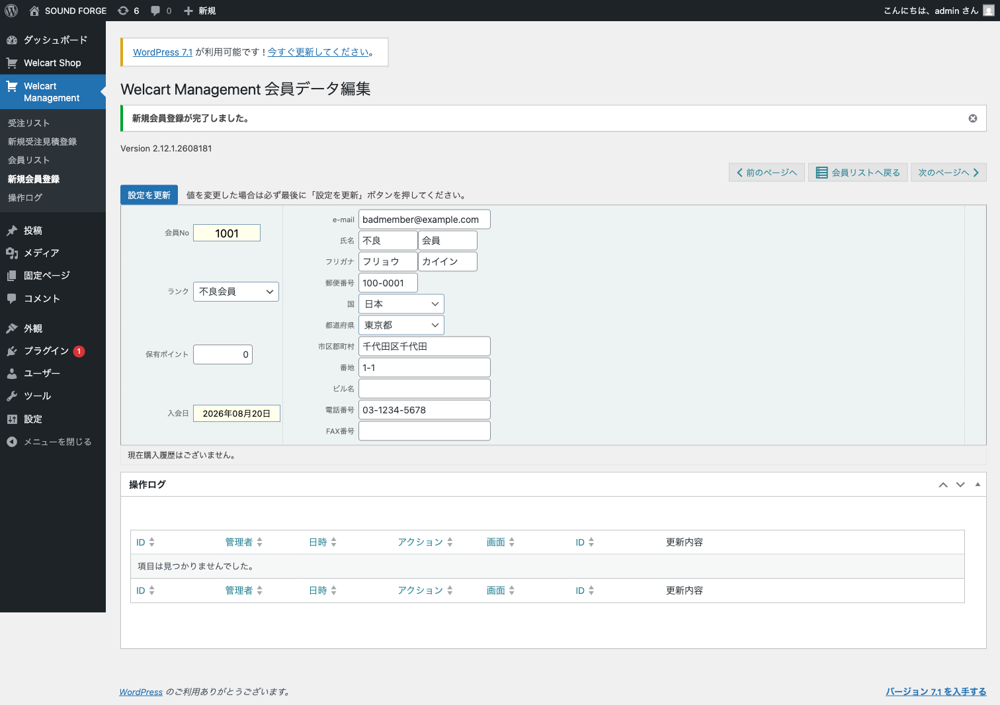
フロント（会員ログイン画面）からこの会員としてログインし、しきい値（30,000円）を
大きく超える商品（Bass Combo 100W ¥62,000）をカートに入れたところ、カート表には
「商品合計 ¥62,000」のみが表示され、自動割引の行自体が表示されなかった
（除外対象ランクのため wcd_available_rules フィルタが空配列を返し、
割引ルールが無効化されている）。
{kind=link}
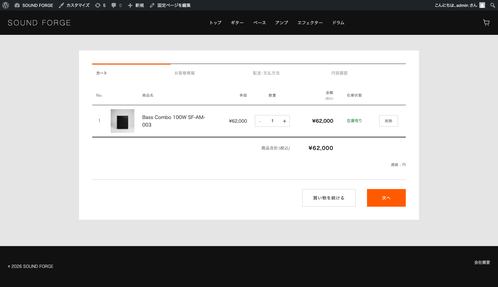
購入確認画面でも「商品合計 ¥62,000」「総合計金額 ¥62,000」のみでキャンペーン割引の
行が無いことを確認し、そのまま注文を確定した（受注ID 1009）。DBを直接クエリし、
wp_usces_order（ID=1009）が order_item_total_price = 62000.00 /
order_discount = 0.00 / mem_id = 1001 として保存されていること、会員ページの
購入履歴にも「購入金額 ¥62,000」「値引き ¥0」と表示されることを確認した。
{kind=link}
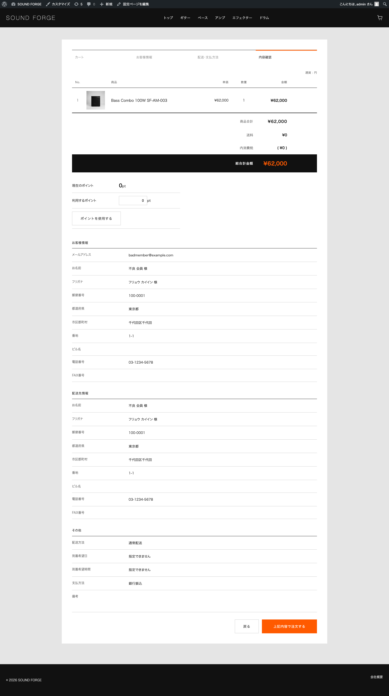
13. 除外ランク（ゲスト）の動作確認#
除外条件設定で「未ログイン（非会員）」に追加でチェックを入れて保存した
（「不良会員」はステップ14で使うため残したまま。DB:
ranks: ["guest", 99]）。
{kind=link}
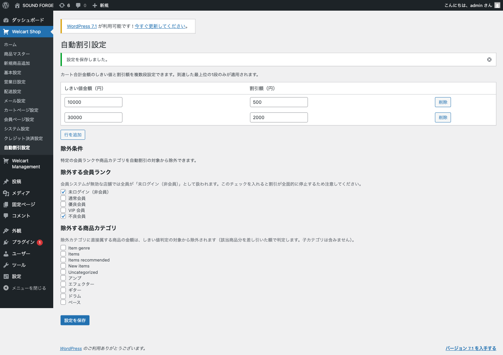
フロント側の会員セッションからログアウトし、未ログイン状態でしきい値を超える商品 （Deep Black PB Bass ¥68,000）をカートに入れたところ、「商品合計 ¥68,000」のみが 表示され、自動割引の行は表示されなかった。ゲスト除外の設定が正しく効いていることを 確認した。
{kind=link}
14. 受注編集の再計算での持ち主ランク解決の確認#
ステップ12で確定した受注（ID 1009、持ち主は不良会員の badmember@example.com、
mem_id=1001）を、除外対象ではない管理者アカウント（admin、Welcart会員としては
未登録＝このアカウント自身のセッションは非会員扱い）で管理画面の受注編集画面から開き、
数量を1→2（¥62,000→¥124,000）に変更して「Recalculation」を押した。
管理者自身のセッションは非会員（除外対象の「未ログイン」）であり、除外条件設定を そのままセッションから判定すればどのみち除外されてしまうため、この検証だけでは 「持ち主のランクで判定されているか」「操作者のセッションで判定されているか」を 区別できない。そこで、ステップ14実施時点の除外設定は「不良会員」と「未ログイン」の 両方をチェックした状態にしてあり、次のステップ15で「不良会員」設定を外した状態の 対照実験を行うことで、表示された割引額が本当に「受注の持ち主（不良会員）」の判定に 由来するのか、それとも別の理由（バグ等）でたまたま割引が出ていないだけなのかを 切り分けた。
再計算の結果、「商品合計 124,000」「キャンペーン割引 0」「総合計金額 124,000」と 表示され、金額(¥124,000)はしきい値(30,000円)を大きく超えているにもかかわらず 割引が適用されないことを確認した。
{kind=link}
15. 対照実験: 除外設定を外した状態での同一受注の再計算（設計意図の裏付け）#
上記の結果が本当に「受注の持ち主（不良会員）」のランク判定によるものかを確認するため、 除外条件設定から「不良会員」のチェックを外し（「未ログイン」は残したまま）保存した。 ページを再読み込みすると数量は未保存のためDB上の値（1・¥62,000）に戻っていたが、 そのまま数量を変更せず「Recalculation」を押したところ、今度は「キャンペーン割引 -2000」 「総合計金額 60,000」と、正しく30,000円以上の段の割引が適用された。
{kind=link}
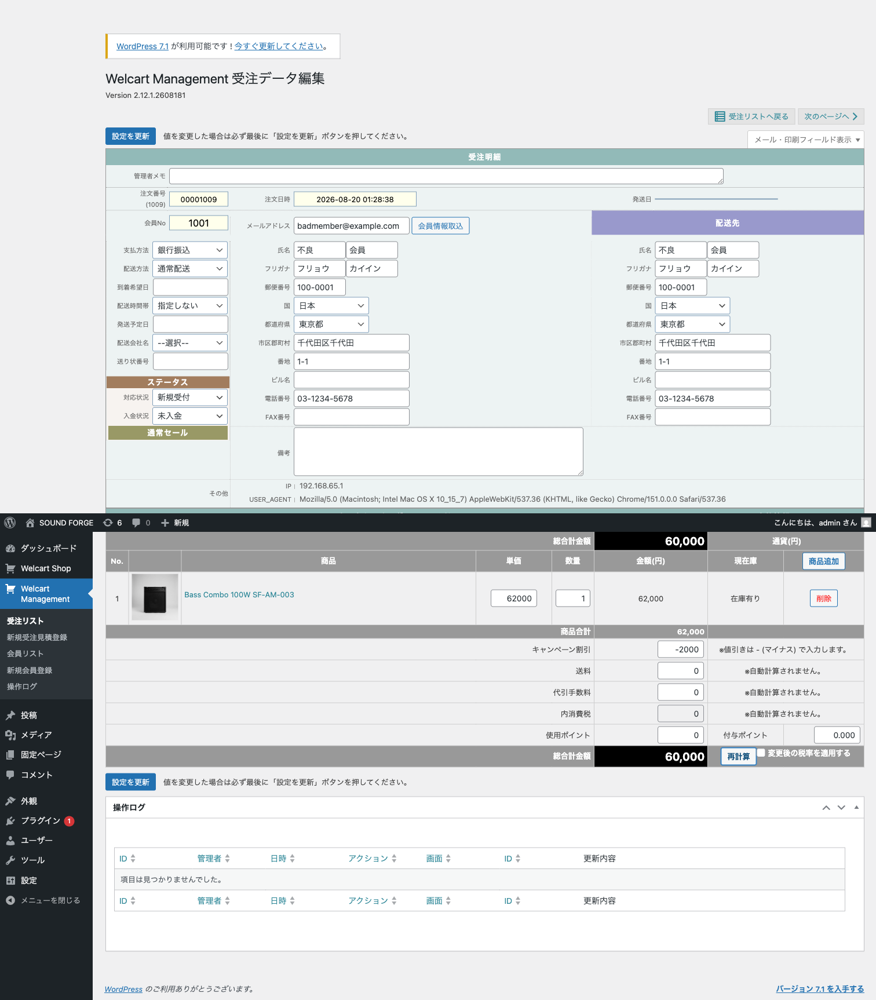
この対照実験により、ステップ14で割引が出なかったのは操作者（管理者）のセッション状態や
偶然の不具合によるものではなく、除外設定に「不良会員」が含まれているかどうかに正確に
連動して、受注の持ち主（badmember、不良会員）のランクで判定が行われていることを
Docker環境での操作を通じて確認できた。設計書の「経路2: 受注編集画面の再計算」節が意図した、
WCD_Integration::filter_order_recalculation() 実行中だけ対象受注IDを WCD_Exclusion
へ通知し、セッションではなく受注の持ち主のランクを解決する実装が、意図どおりに
機能していることの裏付けとなった。
16. 後方互換の確認#
除外条件設定（会員ランク・商品カテゴリ）をすべて空にして保存した。DBで
wp_options.wcd_exclusions が
a:2:{s:5:"ranks";a:0:{}s:10:"categories";a:0:{}}（両方とも空配列）であることを
確認した。
{kind=link}
第一段階の検証で使用したテスト商品（検証用商品3000円／TEST-3000／¥3,000）を数量4 （合計¥12,000）でカートに入れたところ、「商品合計 ¥12,000」「自動割引 -¥500」 「割引後合計 ¥11,500」と表示され、これは本ドキュメント冒頭「3. しきい値到達後の カート画面（割引行の表示）」に記録した第一段階の結果と完全に同一の数値であった。 除外条件を導入する前（第一段階）と、除外条件をすべて空にした状態（第二段階）とで 挙動に差が無いことをDocker環境で確認した。
{kind=link}
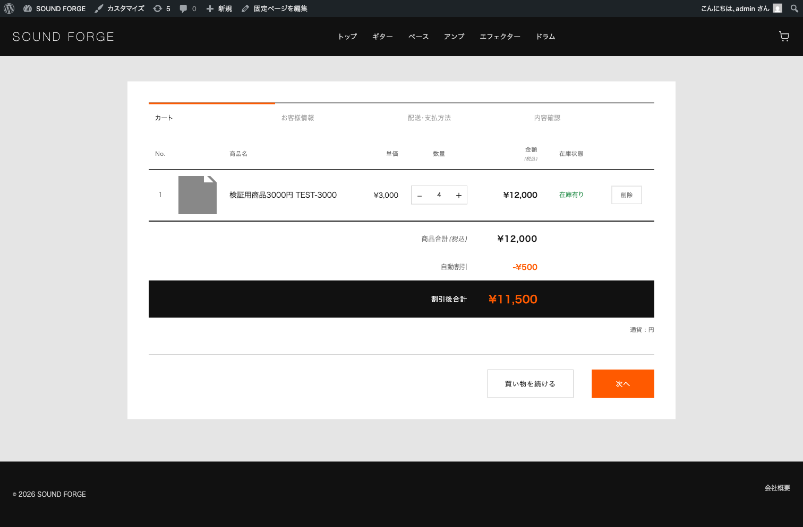
17. 除外設定有効時の受注再計算べき等性の確認（2周目修正 try/finally 保護後のDocker環境での再検証）#
evaluator の REJECT（recalculation-injection-regression-safety 軸）を受けた3周目の
追加検証。14〜15節はいずれも除外設定が有効な状態で「Recalculation」ボタンを1回だけ
クリックした結果しか記録しておらず、2周目修正（コミット d66e4e9）で
WCD_Integration::filter_order_recalculation() の calculate_amount() 呼び出しに
try/finally 保護を追加した後も、get_injected_discount() / remember_injected_discount()
による二重計上防止ロジックが複数回の「Recalculation」クリックで安定することの
Docker環境での検証記録が欠けていた。第一段階の8-2節（同一受注への複数回クリックでべき等性を確認）に
相当する検証を、除外設定が有効な状態で改めて行った。
17-1. 除外ランク設定の再有効化#
管理画面の除外条件設定で「不良会員」（mem_status=99）に再度チェックを入れて保存した
（DB: wcd_exclusions の ranks に 99）。
{kind=link}
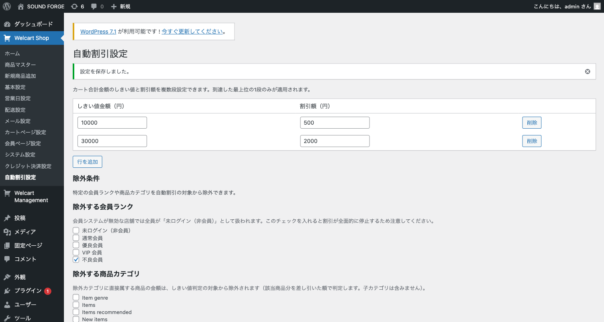
17-2. 除外対象でないゲスト受注での複数回クリック（二重計上の非再発）#
過去のテスト操作でメタと受注が不整合な状態になっていた既存受注（ID 1009 等）を
SQL で操作し直すのではなく、混同を避けるため新規にクリーンな受注を確定した。
Multi Effects Processor（¥32,000、エフェクター）をゲスト（非会員、除外対象外）として
カートに入れ購入手続きを進め、カート画面・購入確認画面のいずれも「商品合計 ¥32,000」
「自動割引 -¥2,000」「割引後合計/総合計金額 ¥30,000」と表示されることを確認した上で
注文を確定し、受注ID 1010 を得た。DB を直接クエリし、
wp_usces_order（ID=1010）が order_item_total_price = 32000.00 /
order_discount = -2000.00、wp_usces_order_meta の wcd_injected_discount = 2000
であり、受注本体とメタが整合したクリーンな状態であることを確認した。
この受注の管理画面編集画面を開き、数量を1→2（¥32,000→¥64,000、しきい値30,000円以上の 段のため割引額は-¥2,000のまま変わらないはず）に変更し、「Recalculation」ボタンを 3回連続でクリックした。
- 1回目: キャンペーン割引 -2000、総合計金額 62,000（商品合計64,000-割引2,000）

docs/screenshots/41-recalc-idempotency-guest-order1010-click1.png - 2回目: キャンペーン割引 -2000（1回目から変化なし）

docs/screenshots/42-recalc-idempotency-guest-order1010-click2.png - 3回目: キャンペーン割引 -2000（変化なし）
docs/screenshots/43-recalc-idempotency-guest-order1010-click3.png
{kind=link}
3回連続でクリックしても割引額が最初の正しい値（-¥2,000）のまま安定し、二重計上 （-¥2,500、-¥3,000 のような累積的な誤りへの発展）が発生しないことをDocker環境で確認した。
17-3. 除外対象ランクの受注での複数回クリック（0のまま安定することの確認）#
除外ランク（不良会員、mem_status=99）の会員として新規受注を作成する際、
過去に使用した会員（ID 1001、badmember@example.com）は8-15節の一連の操作で
受注メタが不整合な状態（wcd_injected_discount=2000 だが該当受注の
order_discount=0.00 のまま未保存）になっていたため、混同を避けるため
管理画面の「新規会員登録」から別の検証用会員（badmember2@example.com、
ランク「不良会員」）を新規に作成した（DB: wp_usces_member ID=1002、
mem_status=99）。
この会員としてフロントからログインし、Multi Effects Processor（¥32,000）を
購入したところ、除外ランクのため自動割引の行が表示されず「総合計金額 ¥32,000」の
まま注文を確定し、受注ID 1011 を得た。DB で wp_usces_order（ID=1011）が
order_item_total_price = 32000.00 / order_discount = 0.00 であることを確認した。
この受注の管理画面編集画面を開き、数量を1→2（¥32,000→¥64,000）に変更し、 「Recalculation」ボタンを3回連続でクリックした。
- 1回目: キャンペーン割引 0、総合計金額 64,000（割引なし）
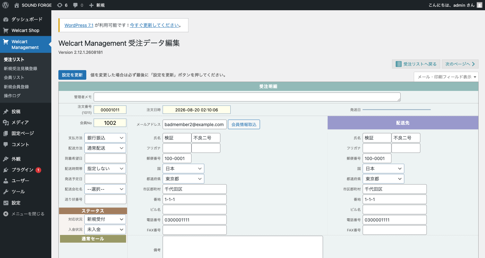
docs/screenshots/44-recalc-idempotency-excluded-rank-order1011-click1.png - 2回目: キャンペーン割引 0（変化なし）
docs/screenshots/45-recalc-idempotency-excluded-rank-order1011-click2.png - 3回目: キャンペーン割引 0（変化なし）
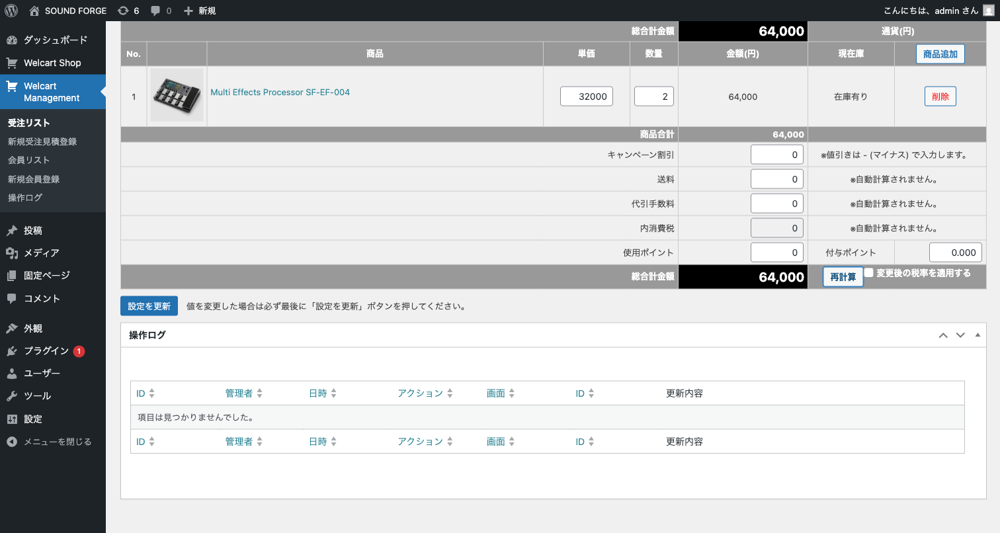
docs/screenshots/46-recalc-idempotency-excluded-rank-order1011-click3.png
{kind=link}
{kind=link}
{kind=link}
除外対象ランクの受注では、しきい値（30,000円）を大きく超える金額（¥64,000）に 変更した後も、3回連続のクリックを通じて割引額が0のまま安定することをDocker環境で確認した。
以上17-2・17-3により、WCD_Exclusion::begin_order_recalculation() /
end_order_recalculation() の追加で calculate_amount() の呼び出し経路に
try/finally が新たに挟まった後も、get_injected_discount() /
remember_injected_discount() による二重計上防止ロジックが、除外設定が有効な状態・
除外対象ランクの受注・除外対象外の受注のいずれでも、複数回の「Recalculation」
クリックに対して安定して機能することを確認した。検証後、除外条件設定は
「不良会員」のチェックを外し、後方互換の基準状態（wcd_exclusions の ranks /
categories とも空配列）に戻した。
18. composer test / composer lint の最終確認#
上記一連の検証を終えた最終状態のコードに対し、Docker コンテナ内
（docker compose exec wordpress、bind mount 済みの vendor/bin/phpunit /
vendor/bin/phpcs を使用）で再実行した。
vendor/bin/phpunit --bootstrap tests/bootstrap.php tests/unit: 46 tests, 53 assertions, OKvendor/bin/phpcs --standard=phpcs.xml.dist: 11 / 11 完了、違反0件
訂正: 本節はもともと「44 tests, 51 assertions」と記録していたが、その値を取得した
コミット（1258924、2026-08-20 10:37:44）は2周目修正コミット d66e4e9（受注再計算の
例外安全性のため try/finally 保護を追加）・38a9ae6（会員ランク0の境界値の回帰テストを
2件追加）より前に作成されたものであり、現在のコードベースの実際の状態を反映していな
かった。38a9ae6 で追加された2件の回帰テストの分だけテスト件数・アサーション件数が
増え、実際に今回 Docker コンテナ内で取得した最新の数値は46 tests, 53 assertionsである。
以上により、設計書「テスト方針／Docker環境での検証」の6項目（除外カテゴリの3箇所整合・部分除外、 除外ランク（会員）、除外ランク（ゲスト）、受注編集再計算での持ち主ランク解決、 後方互換）をすべてDocker環境で確認した。加えて、当初計画になかった対照実験（ステップ15）を 追加で行い、「持ち主のランクで判定されている」という主張を裏付けとして補強した。さらに 2周目修正で追加された try/finally 保護についても、複数回クリックによる二重計上の 非再発を17節でDocker環境での検証により確認した。
19. E2E（Playwright）の意図的な失敗確認（空振り検知）#
実装計画（.nipper/chot/plans/2026-08-20-e2e-tests.md）タスク4ステップ5・タスク7
ステップ3が要求する「意図的に条件を壊してテストが空振りしないことを確認する」検証を、
稼働中の Docker 検証環境に対して実施した。wcd_settings を無効化した状態で
01-cart-display.spec.ts を実行すると1段目のテストが Expected: 500, Received: null
で FAIL し、includes/class-wcd-integration.php の差し戻しロジックを一時的に単純加算へ
書き換えた状態で 02-checkout-consistency.spec.ts を実行すると3件目（再計算のべき等性）
が Expected: 500, Received: 1000 で FAIL することを確認した。確認後はいずれも
git checkout で元に戻し、01-cart-display.spec.ts と 02-checkout-consistency.spec.ts
の全6件が PASS することも再確認した。実行コマンド・実際の出力・検証中に判明した
beforeAll の resetToKnownState() が空振り確認を無効化してしまう計画内部の矛盾
（一時的に無効化して回避した）の詳細は docs/ai-report.md「21. 意図的な失敗確認（空振り
検知）の実施記録（2周目修正）」を参照。
20. 提出直前の最終確認（E2E 全件・単体テスト・コーディング規約）#
提出物が最新のコードに追随しているかを確かめるため、稼働中の Docker 検証環境に対して E2E スイート全件を通しで実行し、あわせて単体テストと WPCS チェックを再取得した。 19節が記録しているのは「意図的に壊した場合に FAIL するか（空振り検知）」であり、 全件を素の状態で通した記録は本節が初出である。
| 対象 | コマンド | 結果 | ログ |
|---|---|---|---|
| E2E（Playwright） | composer e2e |
11 passed (40.2s) | 47-e2e-full-run.txtContainer docker-db-1 Running ==> 検証環境は準備済み（商品 27 点） ==> 割引ルールを既知の状態にする（10,000円以上-500円 / 30,000円以上-2,000円） Container docker-db-1 Running Success: Value passed for 'wcd_settings' option is unchanged. ==> 除外設定を空にする Container docker-db-1 Running Success: Value passed for 'wcd_exclusions' option is unchanged. ==> リセット完了 ==> Playwright を実行 Running 11 tests using 1 worker (node:9063) Warning: The 'NO_COLOR' env is ignored due to the 'FORCE_COLOR' env being set. (Use `node --trace-warnings ...` to show where the warning was created) Container docker-db-1 Running Container docker-db-1 Running Container docker-db-1 Running ✓ 1 tests/01-cart-display.spec.ts:24:7 › カート画面の割引表示 › しきい値未満では割引行が出ない (2.0s) Container docker-db-1 Running ✓ 2 tests/01-cart-display.spec.ts:33:7 › カート画面の割引表示 › 1段目に到達すると -500 と割引後合計が出る (1.9s) Container docker-db-1 Running ✓ 3 tests/01-cart-display.spec.ts:41:7 › カート画面の割引表示 › 2段目に到達すると -2000 に切り替わり、累積しない (1.9s) Container docker-db-1 Running Container docker-db-1 Running Container docker-db-1 Running ✓ 4 tests/02-checkout-consistency.spec.ts:27:7 › 割引の3箇所整合と受注再計算のべき等性 › カート画面と購入確認画面で割引額が一致し、購入を完了できる (5.2s) ✓ 5 tests/02-checkout-consistency.spec.ts:44:7 › 割引の3箇所整合と受注再計算のべき等性 › 確定後の受注データにも同じ割引額が記録されている (1.4s) ✓ 6 tests/02-checkout-consistency.spec.ts:52:7 › 割引の3箇所整合と受注再計算のべき等性 › 再計算を3回繰り返しても割引額が変動しない（二重計上の非再発） (1.9s) Container docker-db-1 Running Container docker-db-1 Running Container docker-db-1 Running Container docker-db-1 Running Container docker-db-1 Running ✓ 7 tests/03-category-exclusion.spec.ts:25:7 › 除外カテゴリによる部分除外 › 除外なしなら除外対象カテゴリの商品も合算されて割引される (3.8s) Container docker-db-1 Running ✓ 8 tests/03-category-exclusion.spec.ts:36:7 › 除外カテゴリによる部分除外 › エフェクターを除外すると対象小計が下がり割引が消える (1.2s) Container docker-db-1 Running Container docker-db-1 Running Container docker-db-1 Running Container docker-db-1 Running ✓ 9 tests/03-category-exclusion.spec.ts:44:7 › 除外カテゴリによる部分除外 › 除外により適用される段が下がる (5.0s) ✓ 10 tests/04-admin-settings.spec.ts:24:7 › 管理画面からの設定保存 › 管理画面で保存したしきい値と割引額が再表示される (1.4s) Container docker-db-1 Running Container docker-db-1 Running ✓ 11 tests/04-admin-settings.spec.ts:42:7 › 管理画面からの設定保存 › ログインしていないと設定画面を開けない (213ms) 11 passed (40.2s) |
| 単体テスト | composer test |
46 tests, 53 assertions, OK | 48-composer-test-latest.txt$ vendor/bin/phpunit --bootstrap tests/bootstrap.php tests/unit PHPUnit 9.6.36 by Sebastian Bergmann and contributors. .............................................. 46 / 46 (100%) Time: 00:00.013, Memory: 6.00 MB OK (46 tests, 53 assertions) |
| コーディング規約 | composer lint |
11 / 11 ファイル、違反0件 | 49-composer-lint-latest.txt$ vendor/bin/phpcs --standard=phpcs.xml.dist ........... 11 / 11 (100%) Time: 1.01 secs; Memory: 16MB |
E2E の内訳は 01-cart-display（3件）・02-checkout-consistency（3件）・
03-category-exclusion（3件）・04-admin-settings（2件）の計11件で、いずれも PASS した。
単体テストの46 tests, 53 assertions は18節で記録した値と一致しており、その後
プラグイン本体（includes/）に変更が入っていないことの裏付けにもなっている。
実行環境についての注記: 本節の単体テスト・WPCS はホスト側の PHP 8.2.29 で実行した （18節は Docker コンテナ内の PHP 8.2.25 で実行）。件数・アサーション数・違反件数は 両者で一致した。
その他の記録（参考）#
- Welcart Shop・本プラグインの有効化直後のプラグイン一覧:
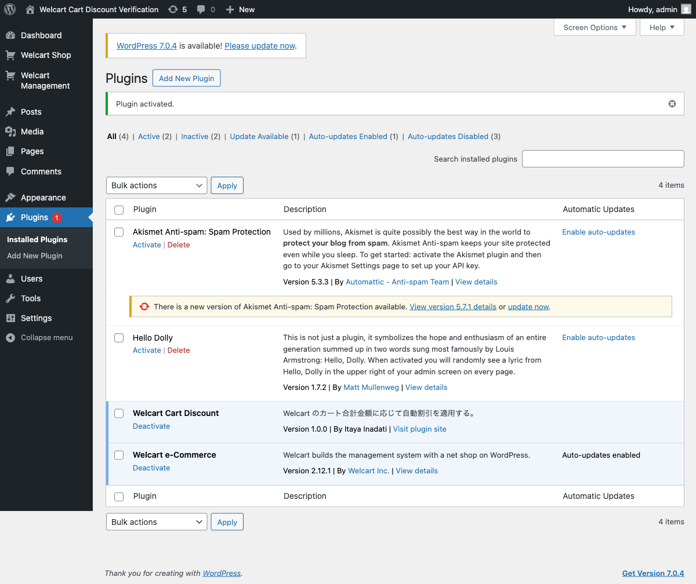
docs/screenshots/00-plugins-active.png - Welcart 初期設定（支払方法「銀行振込」を追加した直後）:
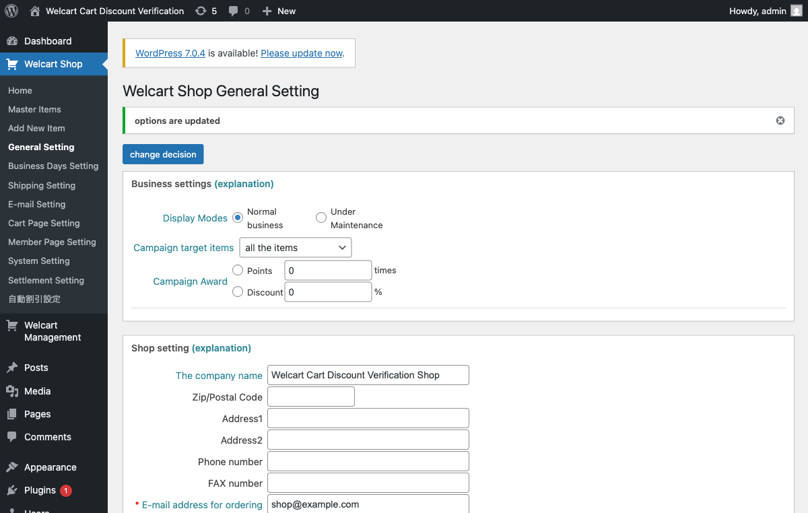
docs/screenshots/00-welcart-settings.png - テスト商品登録後の商品編集画面（SKU・在庫・配送方法設定済み）:
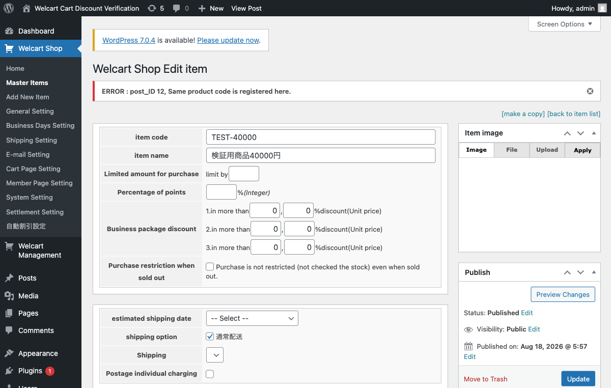
docs/screenshots/00-item-registered.png
{kind=link}
{kind=link}
{kind=link}